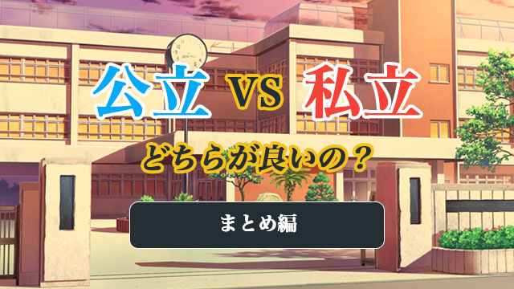

公立と私立の違いについてよく聞かれることに「教師の熱意」があります。
「やはり公立の先生は私立と違ってあまり熱心ではないのでは？」という問いです。
確かに一般論としては、公立の教師は公務員ということもあり教師間競争のような雰囲気はないかもしれません。私立のように「熱意」が勤務評価に厳しく反映することもないようです。
何より私立のように、学校の人気が自分たちの査定にハネ返るという危機感が欠けているのは確かです。
大学進学指導に熱心じゃないことも事実。
そもそも公立の先生方は大学受験指導が自分たちの仕事、少なくともメインの仕事とは考えていないです。
こう聞くと、親は我が子を公立に行かせたくないと思うかもしれませんが、それは早計です。前回も述べたように、私立も大学受験指導の確固たるノウハウを持った教師は少なく、結局は生徒のほとんどが予備校や塾へ行かざるを得ない点で大差がないからです。
しかし、それならなぜ公立の教師がイマイチ熱心じゃないとこれほど思われているのか。
やはり公立は私立と違って「親方日の丸」的な体質があるということ。これが大きいと思います。民間企業と役所の違いというか、公立の教師は基本的に身分が保障されています。
そのせいか、生徒や親の評判を気にする必要がない。
さらに少し古い話ですが、公立はかつて日教組など組合の力が強く、大っぴらに政治活動に励む教師も少なくなかった。
近隣の公立（県立）高校でも、卒業式に君が代を歌う・歌わないで大混乱する例がいくつかありました。このような生徒を巻き込んでの政治活動が世間の反発を生んだのは事実です。
実際、教育より政治活動に熱心な“組合系の教師”たちが学校を牛耳る事態もありました。
私の記憶では1960年代をピークに90年代初めくらいまで、ややオーバーに言えば公立の組合による学校支配が続いた印象があります。
前回の記事でも触れた、都立高校の学校群制度のように、過度の受験競争を嫌って平等化─画一化─を進める動き、そして組合活動などの政治的行動などによって公立の人気は凋落を迎えたわけです。
そしてその間隙を縫うように私立が大学進学の実績を伸ばしていく構図は前回述べた通りです。
大切なのは学校の活性化
つまり公立の人気凋落は私立の人気上昇と連動していて、さらにそのことが「公立の先生は熱心でない」という言葉に集約されてしまった。
そう言っても事実からさほど遠くはないと思います。
だから急いで結論を言うなら、先生の熱意とは「学校」の銘柄で決まるものではないということです。それはあくまで個人レベルの領域だからです。
公立私立を問わず、どんな学校にも熱心な先生はいます。生徒に学力をつけるため良い授業をし、悩みや問題に寄り添い、少しでも力になろうとする先生。
公立だから不熱心、私立だから熱心とは一概に言えないのです。公立イコール不熱心は一つのイメージです。
ただ、何度も言うように私立は評判を気にするので、学校によっては校長などの強い意向を反映して、教師たちに「めんどう見」を良くするよう指導する所があります。
保護者会なども公立より多く開催する傾向があります。
それに対して公立は学校総体として「熱意」を強制することはない。あくまで個人レベルで熱心な先生がいるという状況です。
教師の熱意は確かに大切かもしれませんが、それより私は学校全体が活性化しているかどうかの方が大事だと思っています。
教育の理想をきちんと掲げ、つまりどのような生徒を育てるかその目標を学校全体で共有し、一人ひとりの教師が自分の教科を通じてどう実践していくか熱心に研鑽していること。
そしてその目標に向けて教師相互が活発に意見交換し、指導技術を高めていく。そのために校長や幹部教師が雰囲気づくりをしている。そんな学校が子どもを通わせるにふさわしいと思っています。
私の見るところでは、そのような活気ある学校は私立のいわゆる中堅校に多い気がしています。
後でも述べますが、残念ながら名門─偏差値の高い難関校─といわれる私立の不活性が最近目立ちます。それに対して公立の巻き返し現象が起こり始めています。
これは新しい時代に向けて「学校勢力図」が書き換わる前兆かもしれません。
名門私立は不活性!?
どういうことかというと、この数十年日の出の勢いだった私立の躍進にどうやらかげりが見えること。それに反して都立や一部県立などの公立が中高一貫の設置など、これまで私立に流れていた優秀な生徒を取り戻す動きを見せているということです。
名門といわれる私立の中には、かつてほどの勢いを失いつつあるところが増えているというのが私の印象です。
特に大学合格だけを売りにのし上がってきた偏差値絶対主義の学校は、元々明確な教育理念があったわけでなく広報戦略の巧みさで名門化したため、目標を達成した後の地道な教育力向上の努力を怠ってきたツケが回ったといえます。
大学合格を競うあまり肝心の教育内容の充実を後回しにしてきた学校です。
かつて私の教え子でこの種の（偏差値絶対主義の）高校に通っている生徒がいました。彼が大学受験する際こう言ったのを覚えています。
「A大学の全学部を受験しろと学校に言われて困っています……」
彼は難関A大学の法学部を志望していました。その彼に高校側は法学部だけでなく文学部など文系学部を全て受けろと指示したのです。つまり彼は高校側の合格実績を稼ぐために行きたくもない学部をいくつも受けさせられたわけです。
受験産業も真っ青の強引な“実績稼ぎ”です。
当時私はこの学校の校長から直接“教育方針”を聞いたことがあります。
彼いわく「生徒の頭にドリルで穴を開けそこにダーッと知識を流し込む。それがウチの方針だ！」
いまこの学校は全盛期と比べ人気を落とし、かなり志願者を減らしています。
もう一つ。これら名門私立の不活性要因として教師の問題があります。
一般的に言えば私立は名門に限らず公立のように人事異動（転勤）がありません。
いったん採用されればその多くは定年までいるのが普通です。
特に名門校や伝統校は高齢化しやすい。高齢化が悪いとは言いませんが、たいていベテランが発言力をもっているので若手が萎縮する傾向があるとは言えます。
全体の雰囲気としては風通しがよいとは言えないのではないでしょうか。
私は先にあげた活性化しつつある中堅私立校が、不活性な名門校にとって変わる日が近づいている気がします。下克上の予感ですね。
公立の復権はよいことなのか
ところで先ほど私は公立が巻き返していると言いましたが、それは必ずしも単純に肯定的な意味で話したのではありません。
なぜならいまの公立の目指す方向が、かつての私立の後追いの様相だからです。
つまり大学進学を目指すということ。
昔の名門公立の復活を意味しているように思えるからです。
少し前の東京都知事の「昔の日比谷のような名門都立を復活させる」という言葉がそれを示しています。
現に中高一貫をしいた都立高などは、私立顔負けの「詰め込み」教育に走り出しています。
都立だけでなく、近隣の県立高校なども医学コースを作ったり、大学受験に備えて先取り学習を行うところも出てきました。
ひと昔、いやふた昔前の私立のように“ナリフリ構わぬ”受験体制をしこうとしているかのように見えます。
私は公立のこの姿勢に少なからぬ疑問を抱きます。「公立の良さ」が失われる気がするからです。
確かにこれまでの公立には、受験教育を忌避する余り特徴のない退屈な授業や画一的指導が目立ち、組合の支配など“生徒不在”の傾向があったことは否めません。
しかしその一方で公立ならではの、自由で伸び伸びした校風がありそれが生徒の自主性を結果的に育んでいたことも事実です。
教師の中には受験にとらわれず、自分のやりたいように創意工夫した授業を行うことでかえって深いレベルまで掘り下げる“名物教師”もたくさんいました。
しかし、最近はかつての組合支配の苦い反省もあるのか教育委員会（行政）などの締め付けが厳しく、教師の自由裁量も制限されているのが現状のようです。教師に対する管理がだいぶ強まっているのです。
これには現場の教師や生徒、OBなどからも不満の声が相当上がっています。
公立は公（おおやけ）の教育機関として目先の点数にこだわる教育ではなく、もっと将来を見え据えた人材の育成を目指すべきではないかと思います。
私は「公立の復権」が、大学進学を競う点に特化することでかえって公立らしさが失われるのではないかと危惧しています。
学校に頼ってはいけない
結局のところ「公立か私立か」という問い自体あまり意味はないといえます。
教育内容にしろ教師の熱意にしろ大差はないからです。
それより問題なのは、公立も私立も少子化の影響もあり生徒獲得競争に陥っている点です。そしてどちらも生徒を集めるには大学進学の実績を出せば良いと安易に考えていることです。
大学合格数を商品として売り出しさえすれば生徒や親はカンタンになびくと考えているのです。
当たり前ですが、学校の使命は良い教育を生徒に提供することにあるはずです。教育内容の充実とそれに向けた絶えざる研究と改善への努力が必要なのです。
私学は建学の精神に立ち返る必要があり、公立はもっと多様性を大切にすべきです。
今のままではどちらも特徴を失くし、大学受験の予備校化、受験産業化の道を歩んでしまう危険を感じます。
学校選びを考える生徒や親はどう考えればよいのでしょう。
私としては次のように述べたいと思います。
「学校を頼ってはいけない」「学校に過度に期待してはいけない」
学校に何かをしてもらおうと考えるのではなく、主体的に学校という環境を活用するという気持ちが大事なのです。
自分の居場所をしっかりと作り、そこで気の合う仲間や先生を見つけ、積極的に交流し学園生活をエンジョイするという主体性こそが望ましい。
私立だから○○だろう。公立だから○○に違いない。そのような思い込みやレッテル貼りをやめて、白紙の状態で新しい「環境」を自ら創造する思いです。そのためには学校の宣伝文句に惑わされないことも大事です。
そうすればどの学校に行こうが「こんはなずではなかった」という失望は感じなくてすむでしょう。